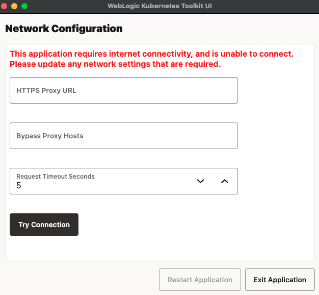
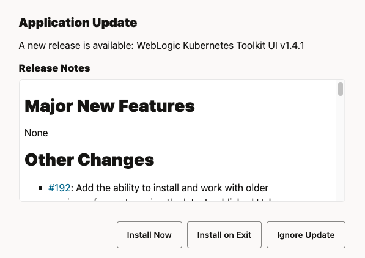

WKTUIアプリケーションをインストールするには:
各リリースには多数のアセットがあります。 これらの詳細については、「WKT UIのインストール」を参照してください。
WKTUIには、適切なUIレンダリングだけでなく、更新の検出とダウンロード、使用可能な場合、および関連するソフトウェアの使用可能なバージョンの決定のためにGitHubに対して行うREST APIコールについても、インターネット接続が必要です。 したがって、WKTUIはアプリケーションの起動時にインターネット接続をチェックします。 WKTUIがインターネット接続チェックに失敗すると、「ネットワーク構成」ダイアログが表示されます。
インターネットに接続するために、必要に応じてプロキシ情報を入力、修正または削除し、「接続試行」をクリックします。 接続が成功すると、「アプリケーションの再起動」がアクティブ化されます。これをクリックすると、構成が保存され、アプリケーションが再起動されます。
WKTUIには、自動更新機能が組み込まれています。 アプリケーションが起動するたびに、GitHubがチェックされ、新しいバージョンのアプリケーションが使用可能かどうかが判断されます。 新しいバージョンが使用可能な場合、このダイアログ・ボックスが表示され、更新のインストール、アプリケーションの終了時に更新のインストール、および更新の無視のオプションが提供されます。
更新がインストールされていない場合、次回起動時に再度プロンプトが表示されます。 Help > Check for WKT UI Updatesメニュー・アイテムを使用して、アプリケーションの更新をいつでも確認できます。 この自動更新機能は、従来のLinux RPMまたはDEBインストーラを使用してインストールする場合には使用できません。
WKTUIには、WebLogic Kubernetes Toolkit (WKT)の一部である他の2つのオープン・ソース・ツールがバンドルされています:
WKTUIアプリケーションの各リリースには、これらのツールの最新リリースがバンドルされていますが、Help > Check for WKT Tools Updatesメニュー・アイテムを使用してWKTUIリリース間で更新されたバージョンを確認できます。 1つまたは両方のツールの更新が利用可能な場合は、次のようなダイアログ・ボックスが表示されます。 「Tool(s)の更新」をクリックして、バンドルされたツールを更新します。
WKTUIは、WebLogic Remote Consoleと統合して、WebLogic ServerドメインのWDTモデルのビジュアル編集を提供します。
Modelページで指定されているWKTUIと互換性のある最新リリースをダウンロードし、インストールします。WKTUIアプリケーションを起動し、次のイメージに示すModelページに移動します。
表示されているように、WebLogic Remote Console Install Locationへのパスはすでに移入されています。 プラットフォームによっては、そうでない場合もあります。 ロケーションが正しいことを確認し、「WebLogic Remote Consoleの起動」をクリックします。 アプリケーションのバージョンに互換性がない場合は、互換性のあるバージョン要件を持つダイアログ・ボックスが表示されます。 それ以外の場合、次のイメージに示すように、ページがリフレッシュされ、WDTモデルのビジュアル編集が提供されます。
WKTUIでは、ユーザー・プリファレンス(特定のマシン上のユーザーに固有のプリファレンス)がサポートされています。 WindowsまたはLinuxで「ユーザー設定」ダイアログを開くには、File > Preferencesメニュー・アイテムを使用します。 macOSで、WebLogic Kubernetes Toolkit UI > Settingsメニュー・アイテムを使用します。
このダイアログを使用して、次の領域の設定を表示および編集できます:
Proxy Configuration - ネットワークのプロキシ設定を変更し、プロキシ設定は変更しません。WebLogic Remote Console Configuration - WebLogic Remote Consoleインストール・ディレクトリを変更します。Logging Configuration - ロギング・レベルとログ・ディレクトリのロケーションを変更します。Startup Internet Connectivity Test Configuration - インターネット接続チェックのタイムアウトを変更します。 これは、「リクエスト・タイムアウト(秒)」フィールドと同じです。 WebLogic Kubernetes Toolkit UI Introduction Configuration - アプリケーション起動時に導入が表示されるかどうかを変更します。WKTUIアプリケーションがインストールおよび構成されたので、WKTUIアプリケーションの機能を確認します。 このアドベンチャをさらに実践するには、オンプレミス環境で実行されているToDo Listアプリケーションをリフト・アンド・シフトし、Kubernetesに移動します。 最初のクイック・スタート・ドキュメントは両方のトラックをカバーし、フローは次の2つのトラックに分割されます:
どちらのトラックでも、ToDo ListアプリケーションはKubernetes環境で実行されます。